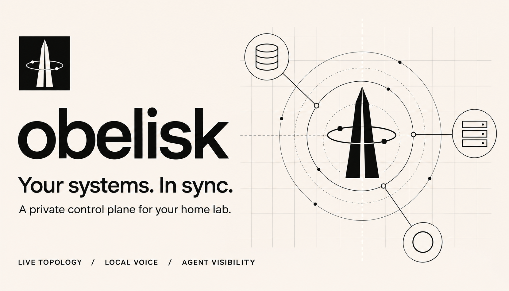
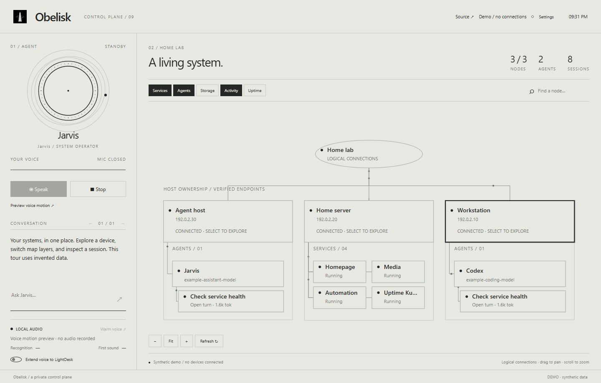

See the whole system.
Explore devices, storage and uptime through a map that follows ownership. Focus on a host when you need the details.
A living map of your home lab.
Devices, services and agents. One quiet surface.
Synthetic data. No account. No connection to your devices.

Explore devices, storage and uptime through a map that follows ownership. Focus on a host when you need the details.
Inspect agent sessions and their reported usage. Open a service, or control an application you have explicitly allowed.
Jarvis is your operator. Local speech has its own circular motion; your voice has a separate line. Text works on its own.
Toggle layers, inspect a node, pan the map and preview the voice animations.
Explore Obelisk ↗
The Windows desktop, telemetry collection and optional Qwen speech output. Voice input uses OpenAI transcription when you provide a key. Agent requests go to your configured OpenClaw Gateway. The browser tour uses only invented data.
This is a Windows x64 source alpha. Build it with Tauri, .NET and Go, then connect your own infrastructure. There is no signed installer yet. Start with the setup guide.